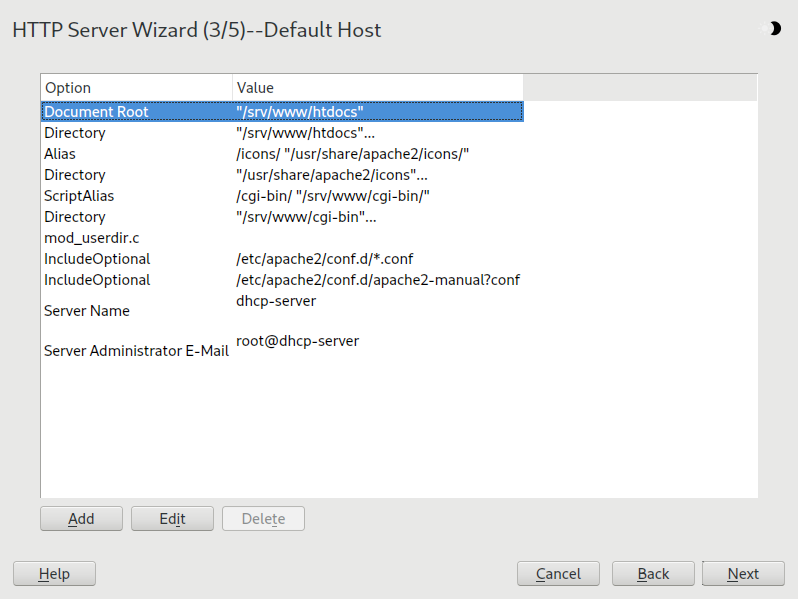
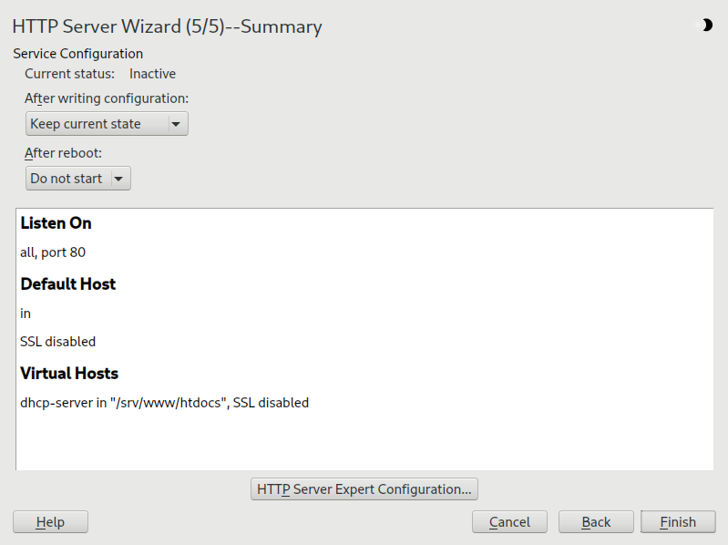
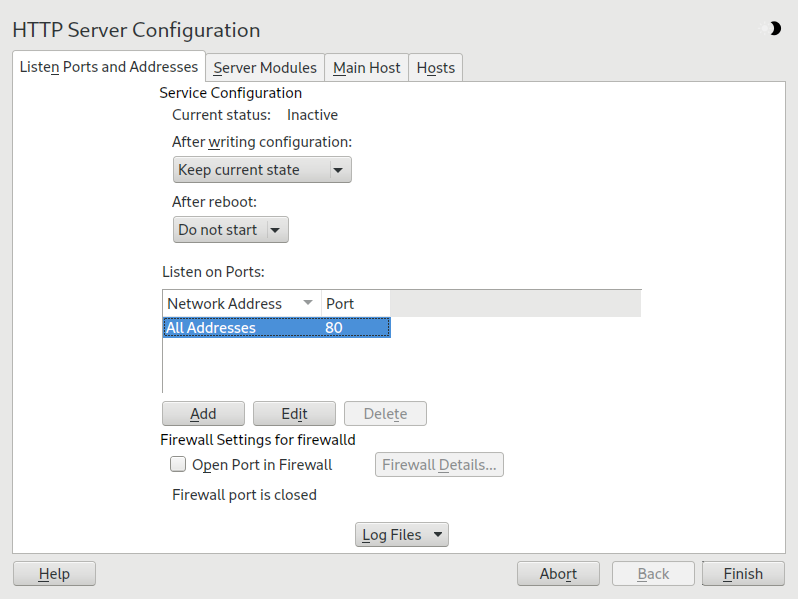
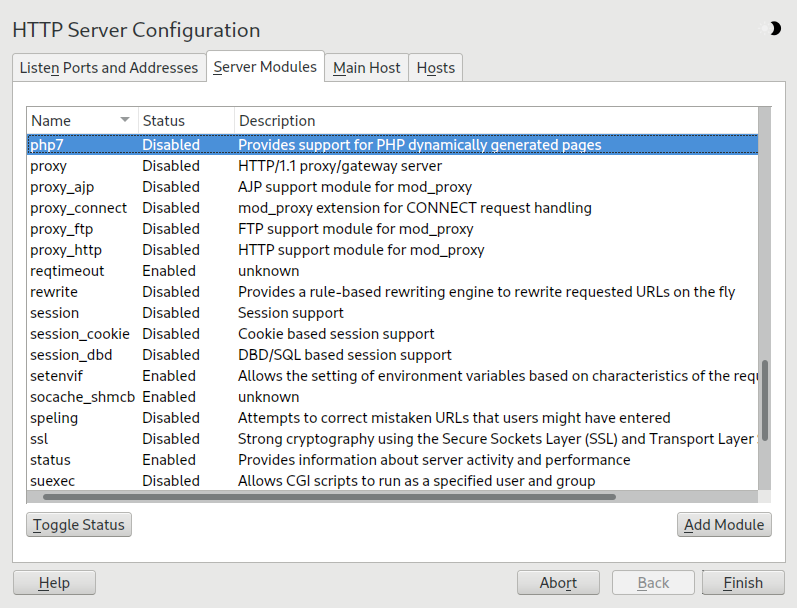

43.2. Configuring Apache
SUSE Linux Enterprise Server offers two configuration options:
Manual configuration offers a higher level of detail, but lacks the convenience of the YaST GUI.
Most configuration changes require a reload or a restart of Apache to take effect.
Manually reload Apache with systemctl reload apache2.service or use one of the restart options as described in the section called “Starting and stopping Apache”.
If you configure Apache with YaST, this can be taken care of automatically if you set to as described in the section called “HTTP server configuration”.
43.2.1. Apache configuration files
This section gives an overview of the Apache configuration files. If you use YaST for configuration, you do not need to touch these files—however, the information might be useful for you to switch to manual configuration later on.
Apache configuration files can be found in two different locations:
43.2.1.1.
/etc/sysconfig/apache2
/etc/sysconfig/apache2 controls global Apache settings, like modules to load, additional configuration files
to include, flags with which the server should be started, and flags that should be
added to the command line. Every configuration option in this file is extensively
documented and therefore not mentioned here. For a general-purpose Web server, the
settings in /etc/sysconfig/apache2 should be sufficient for any configuration needs.
43.2.1.2.
/etc/apache2/
/etc/apache2/ hosts all configuration files for Apache. In the following, the purpose of each file
is explained. Each file includes several configuration options (also called directives). Every configuration option in these files is extensively documented and therefore
not mentioned here.
The Apache configuration files are organized as follows:
/etc/apache2/||- charset.conv|- conf.d/| || |- *.conf||- default-server.conf|- errors.conf|- global.conf|- httpd.conf|- listen.conf|- loadmodule.conf|- magic|- mime.types|- mod_*.conf|- protocols.conf|- server-tuning.conf|- ssl-global.conf|- ssl.*|- sysconfig.d| || |- global.conf| |- include.conf| |- loadmodule.conf . .||- uid.conf|- vhosts.d| |- *.conf
-
charset.conv -
Specifies which character sets to use for different languages. Do not edit this file.
-
conf.d/*.conf -
Configuration files added by other modules. These configuration files can be included into your virtual host configuration where needed. See
vhosts.d/vhost.templatefor examples. By doing so, you can provide different module sets for different virtual hosts. -
default-server.conf -
Global configuration for all virtual hosts with reasonable defaults. Instead of changing the values, overwrite them with a virtual host configuration.
-
errors.conf -
Defines how Apache responds to errors. To customize these messages for all virtual hosts, edit this file. Otherwise overwrite these directives in your virtual host configurations.
-
global.conf -
General configuration of the main Web server process, such as the access path, error logs, or the level of logging.
-
httpd.conf -
The main Apache server configuration file. Avoid changing this file. It primarily contains include statements and global settings. Overwrite global settings in the pertinent configuration files listed here. Change host-specific settings (such as document root) in your virtual host configuration.
-
listen.conf -
Binds Apache to specific IP addresses and ports. Name-based virtual hosting is also configured here. For details, see the section called “Name-based virtual hosts”.
-
magic -
Data for the mime_magic module that helps Apache automatically determine the MIME type of an unknown file. Do not change this file.
-
mime.types -
MIME types known by the system (this is a link to
/etc/mime.types). Do not edit this file. If you need to add MIME types not listed here, add them tomod_mime-defaults.conf. -
mod_*.conf -
Configuration files for the modules that are installed by default. Refer to the section called “Installing, activating and configuring modules” for details. Configuration files for optional modules reside in the directory
conf.d. -
protocols.conf -
Configuration directives for serving pages over HTTP2 connection.
-
server-tuning.conf -
Contains configuration directives for the different MPMs (see the section called “Multiprocessing modules”) and general configuration options that control Apache's performance. Properly test your Web server when making changes here.
-
ssl-global.confandssl.* -
Global SSL configuration and SSL certificate data. Refer to the section called “Setting up a secure Web server with SSL” for details.
-
sysconfig.d/*.conf -
Configuration files automatically generated from
/etc/sysconfig/apache2. Do not change any of these files—edit/etc/sysconfig/apache2instead. Do not put other configuration files in this directory. -
uid.conf -
Specifies under which user and group ID Apache runs. Do not change this file.
-
vhosts.d/*.conf -
Your virtual host configuration should be located here. The directory contains template files for virtual hosts with and without SSL. Every file in this directory ending with
.confis automatically included in the Apache configuration. Refer to the section called “Virtual host configuration” for details.
43.2.2. Configuring Apache manually
Configuring Apache manually involves editing plain text configuration files as user
root.
43.2.2.1. Virtual host configuration
The term virtual host refers to Apache's ability to serve multiple universal resource identifiers (URIs) from the same physical machine. This means that several domains, such as www.example.com and www.example.net, are run by a single Web server on one physical machine.
It is common practice to use virtual hosts to save administrative effort (only a single Web server needs to be maintained) and hardware expenses (each domain does not require a dedicated server). Virtual hosts can be name based, IP based, or port based.
To list all existing virtual hosts, use the command apache2ctl-S. This outputs a list showing the default server and all virtual hosts together with
their IP addresses and listening ports. Furthermore, the list also contains an entry
for each virtual host showing its location in the configuration files.
Virtual hosts can be configured via YaST as described in the section called “Virtual hosts” or by manually editing a configuration file. By default, Apache in SUSE Linux Enterprise Server is prepared for one configuration file per virtual host in /etc/apache2/vhosts.d/. All files in this directory with the extension .conf are automatically included to the configuration. A basic template for a virtual host
is provided in this directory (vhost.template or vhost-ssl.template for a virtual host with SSL support).
It is recommended to always create a virtual host configuration file, even if your Web server only hosts one domain. By doing so, you not only have the domain-specific configuration in one file, but you can always fall back to a working basic configuration by simply moving, deleting or renaming the configuration file for the virtual host. For the same reason, you should also create separate configuration files for each virtual host.
When using name-based virtual hosts, it is recommended to set up a default configuration
that is used when a domain name does not match a virtual host configuration. The default
virtual host is the one whose configuration is loaded first. Since the order of the
configuration files is determined by file name, start the file name of the default
virtual host configuration with an underscore character (_) to make sure it is loaded first (for example: _default_vhost.conf).
The <VirtualHost></VirtualHost> block holds the information that applies to a particular domain. When Apache receives
a client request for a defined virtual host, it uses the directives enclosed in this
section. Almost all directives can be used in a virtual host context. See https://httpd.apache.org/docs/2.4/mod/quickreference.html for further information about Apache's configuration directives.
43.2.2.1.1. Name-based virtual hosts
With name-based virtual hosts, more than one Web site is served per IP address. Apache
uses the host field in the HTTP header that is sent by the client to connect the request
to a matching ServerName entry of one of the virtual host declarations. If no matching ServerName is found, the first specified virtual host is used as a default.
The first step is to create a <VirtualHost> block for each different name-based host that you want to serve. Inside each <VirtualHost> block, you will need at minimum a ServerName directive to designate which host is served and a DocumentRoot directive to show where in the file system the content for that host resides.
<VirtualHost *:80># This first-listed virtual host is also the default for *:80ServerName www.example.comServerAlias example.comDocumentRoot /srv/www/htdocs/domain</VirtualHost><VirtualHost *:80>ServerName other.example.comDocumentRoot /srv/www/htdocs/otherdomain</VirtualHost>
VirtualHost entriesThe opening VirtualHost tag takes the IP address (or fully qualified domain name) as an argument in a name-based
virtual host configuration. A port number directive is optional.
The wild card * is also allowed as a substitute for the IP address. When using IPv6 addresses, the address must be included in square brackets.
<VirtualHost 192.168.3.100:80>...</VirtualHost><VirtualHost 192.168.3.100>...</VirtualHost><VirtualHost *:80>...</VirtualHost><VirtualHost *>...</VirtualHost><VirtualHost [2002:c0a8:364::]>...</VirtualHost>
VirtualHost directives43.2.2.1.2. IP-based virtual hosts
This alternative virtual host configuration requires the setup of multiple IP addresses for a machine. One instance of Apache hosts several domains, each of which is assigned a different IP.
The physical server must have one IP address for each IP-based virtual host. If the machine does not have multiple network cards, virtual network interfaces (IP aliasing) can also be used.
The following example shows Apache running on a machine with the IP 192.168.3.100, hosting two domains on the additional IP addresses 192.168.3.101 and 192.168.3.102. A separate VirtualHost block is needed for every virtual server.
<VirtualHost 192.168.3.101>...</VirtualHost><VirtualHost 192.168.3.102>...</VirtualHost>
VirtualHost directivesHere, VirtualHost directives are only specified for interfaces other than 192.168.3.100. When a Listen directive is also configured for 192.168.3.100, a separate IP-based virtual host must be created to answer HTTP requests to that
interface—otherwise the directives found in the default server configuration (/etc/apache2/default-server.conf) are applied.
43.2.2.1.3. Basic virtual host configuration
At least the following directives should be in each virtual host configuration to
set up a virtual host. See /etc/apache2/vhosts.d/vhost.template for more options.
-
ServerName -
The fully qualified domain name under which the host should be addressed.
-
DocumentRoot -
Path to the directory from which Apache should serve files for this host. For security reasons, access to the entire file system is forbidden by default, so you must explicitly unlock this directory within a
Directorycontainer. -
ServerAdmin -
E-mail address of the server administrator. This address is, for example, shown on error pages Apache creates.
-
ErrorLog -
The error log file for this virtual host. Although it is not necessary to create separate error log files for each virtual host, it is common practice to do so, because it makes the debugging of errors much easier.
/var/log/apache2/is the default directory for Apache's log files. -
CustomLog -
The access log file for this virtual host. Although it is not necessary to create separate access log files for each virtual host, it is common practice to do so, because it allows the separate analysis of access statistics for each host.
/var/log/apache2/is the default directory for Apache's log files.
As mentioned above, access to the whole file system is forbidden by default for security
reasons. Therefore, explicitly unlock the directories in which you have placed the
files Apache should serve, for example, the DocumentRoot:
<Directory "/srv/www/www.example.com/htdocs">Require all granted</Directory>
Require all granted
In previous versions of Apache, the statement Require all granted was expressed as:
Order allow,denyAllow from all
This old syntax is still supported by the mod_access_compat module.
The complete configuration file looks like this:
<VirtualHost 192.168.3.100>ServerName www.example.comDocumentRoot /srv/www/www.example.com/htdocsServerAdmin webmaster@example.comErrorLog /var/log/apache2/www.example.com_logCustomLog /var/log/apache2/www.example.com-access_log common<Directory "/srv/www/www.example.com/htdocs">Require all granted</Directory></VirtualHost>
VirtualHost configuration43.2.3. Configuring Apache with YaST
To configure your Web server with YaST, start YaST and select . When starting the module for the first time, the starts, prompting you to make a few basic decisions concerning administration of the server. After having finished the wizard, the dialog starts each time you call the module. For more information, see the section called “HTTP server configuration”.
43.2.3.1. HTTP server wizard
The HTTP Server Wizard consists of five steps. In the last step of the dialog, you may enter the expert configuration mode to make even more specific settings.
43.2.3.1.1. Network device selection
Here, specify the network interfaces and ports Apache uses to listen for incoming
requests. You can select any combination of existing network interfaces and their
respective IP addresses. Ports from all three ranges (well-known ports, registered
ports, and dynamic or private ports) that are not reserved by other services can be
used. The default setting is to listen on all network interfaces (IP addresses) on
port 80.
Check to open the ports in the firewall that the Web server listens on. This is necessary to make the Web server available on the network, which can be a LAN, WAN, or the public Internet. Keeping the port closed is only useful in test situations where no external access to the Web server is necessary. If you have multiple network interfaces, click to specify on which interface(s) the port(s) should be opened.
Click to continue with the configuration.
43.2.3.1.2. Modules
The configuration option allows for the activation or deactivation of the script languages that the Web server should support. For the activation or deactivation of other modules, refer to the section called “Server modules”. Click to advance to the next dialog.
43.2.3.1.3. Default host
This option pertains to the default Web server. As explained in the section called “Virtual host configuration”, Apache can serve multiple virtual hosts from a single physical machine. The first declared virtual host in the configuration file is commonly called the default host. Each virtual host inherits the default host's configuration.
To edit the host settings (also called directives), select the appropriate entry in the table then click . To add new directives, click . To delete a directive, select it and click .

Here is list of the default settings of the server:
-
Document Root -
Path to the directory from which Apache serves files for this host.
/srv/www/htdocsis the default location. -
Alias -
Using
Aliasdirectives, URLs can be mapped to physical file system locations. This means that a certain path even outside theDocument Rootin the file system can be accessed via a URL aliasing that path.The default SUSE Linux Enterprise Server
Alias/iconspoints to/usr/share/apache2/iconsfor the Apache icons displayed in the directory index view. -
ScriptAlias -
Similar to the
Aliasdirective, theScriptAliasdirective maps a URL to a file system location. The difference is thatScriptAliasdesignates the target directory as a CGI location, meaning that CGI scripts should be executed in that location. -
Directory -
With
Directorysettings, you can enclose a group of configuration options that will only apply to the specified directory.Access and display options for the directories
/srv/www/htdocs,/usr/share/apache2/iconsand/srv/www/cgi-binare configured here. It should not be necessary to change the defaults. -
Include -
With include, additional configuration files can be specified. Two
Includedirectives are already preconfigured:/etc/apache2/conf.d/is the directory containing the configuration files that come with external modules. With this directive, all files in this directory ending in.confare included. With the second directive,/etc/apache2/conf.d/apache2-manual.conf, theapache2-manualconfiguration file is included. -
Server Name -
This specifies the default URL used by clients to contact the Web server. Use a fully qualified domain name (FQDN) to reach the Web server at
http://FQDN/or its IP address. You cannot choose an arbitrary name here—the server must beknown
under this name. -
Server Administrator E-Mail -
E-mail address of the server administrator. This address is, for example, shown on error pages Apache creates.
After finishing with the step, click to continue with the configuration.
43.2.3.1.4. Virtual hosts
In this step, the wizard displays a list of already configured virtual hosts (see the section called “Virtual host configuration”). If you have not made manual changes prior to starting the YaST HTTP wizard, no virtual host is present.
To add a host, click to open a dialog in which to enter basic information about the host, such as , (DocumentRoot), and the . is used to determine how a host is identified (name based or IP based). Specify the
name or IP address with
Clicking advances to the second part of the virtual host configuration dialog.
In part two of the virtual host configuration you can specify whether to enable CGI
scripts and which directory to use for these scripts. It is also possible to enable
SSL. If you do so, you must specify the path to the certificate as well. See the section called “Configuring Apache with SSL” for details on SSL and certificates. With the option, you can specify which file to display when the client requests a directory
(by default, index.html). Add one or more file names (space-separated) to change this. With , the content of the users public directories (~USER/public_html/) is made available on the server under http://www.example.com/~USER.
It is not possible to add virtual hosts at will. If using name-based virtual hosts, each host name must be resolved on the network. If using IP-based virtual hosts, you can assign only one host to each IP address available.
43.2.3.1.5. Summary
This is the final step of the wizard. Here, determine how and when the Apache server is started: when booting or manually. Also see a short summary of the configuration made so far. If you are satisfied with your settings, click to complete configuration. To change something, click until you have reached the desired dialog. Clicking opens the dialog described in the section called “HTTP server configuration”.

43.2.3.2. HTTP server configuration
The dialog also lets you make even more adjustments to the configuration than the wizard (which only runs if you configure your Web server for the first time). It consists of four tabs described in the following. No configuration option you change here is effective immediately—you always must confirm your changes with to make them effective. Clicking leaves the configuration module and discards your changes.
43.2.3.2.1. Listen ports and addresses
In , select whether Apache should be running () or stopped (). In , , , or addresses and ports on which the server should be available. The default is to listen
on all interfaces on port 80. You should always check , because otherwise the Web server is not reachable from outside. Keeping the port
closed is only useful in test situations where no external access to the Web server
is necessary. If you have multiple network interfaces, click to specify on which interface(s) the port(s) should be opened.
With , watch either the access log file or the error log file. This is useful if you want to test your configuration. The log file opens in a separate window from which you can also restart or reload the Web server. For details, see the section called “Starting and stopping Apache”. These commands are effective immediately and their log messages are also displayed immediately.

43.2.3.2.2. Server modules
You can change the status (enabled or disabled) of Apache2 modules by clicking . Click to add a new module that is already installed but not yet listed. Learn more about modules in the section called “Installing, activating and configuring modules”.

43.2.3.2.3. Main host or hosts
These dialogs are identical to the ones already described. Refer to the section called “Default host” and the section called “Virtual hosts”.